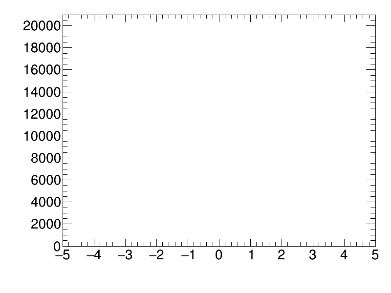
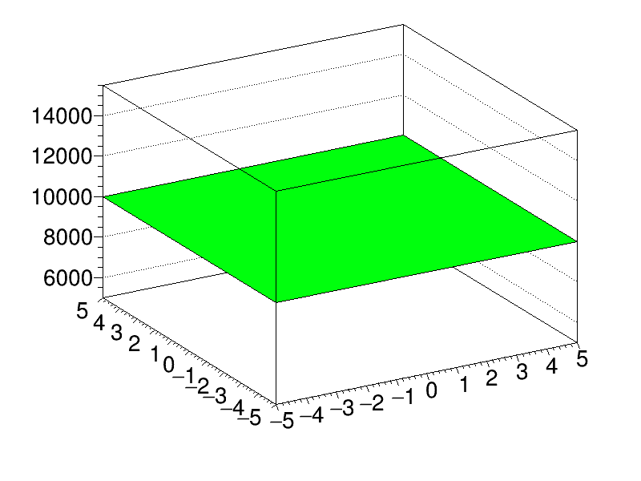

Merge Histograms Bins¶
rootpy implements an additional histogram bin merging method making it easier to merge bins in specified windows of bin indices.
 {kind=link}
{kind=link}
Python source code: plot_bin_merging.py
print(__doc__)
import ROOT
from rootpy.interactive import wait
from rootpy.plotting import Canvas, Hist, Hist2D
from rootpy.plotting.style import set_style
import numpy as np
from random import randint, choice
import time
import os
set_style('ATLAS')
BATCH = ROOT.gROOT.IsBatch()
def random_bin_merge(h):
# randomly choose axis
if h.GetDimension() > 1:
axis = choice([
axis for axis in range(h.GetDimension()) if h.nbins(axis) > 1])
else:
axis = 0
# randomly choose starting bin
start = randint(1, h.nbins(axis) - 1)
end = randint(start + 1, min(start + 5 * h.GetDimension(), h.nbins(axis)))
return h.merge_bins([(start, end)], axis=axis)
# create an animation of a 1D histogram
c1 = Canvas()
if not BATCH and os.path.isfile('binmerge1d.gif'):
os.unlink('binmerge1d.gif')
a = Hist(100, -5, 5)
a.fill_array(np.random.randn(10000))
while a.nbins(0) > 1:
a = random_bin_merge(a)
a.Draw('hist')
if not BATCH:
c1.Print('binmerge1d.gif+20')
time.sleep(.1)
if not BATCH:
c1.Print('binmerge1d.gif++')
# create an animation of a 2D histogram
c2 = Canvas()
if not BATCH and os.path.isfile('binmerge2d.gif'):
os.unlink('binmerge2d.gif')
c2.SetRightMargin(0.1)
b = Hist2D(100, -5, 5, 100, -5, 5)
b.fill_array(np.random.randn(10000, 2))
while b.nbins(0) > 1 or b.nbins(1) > 1:
b = random_bin_merge(b)
b.Draw('LEGO20')
if not BATCH:
c2.Print('binmerge2d.gif+20')
time.sleep(.1)
if not BATCH:
c2.Print('binmerge2d.gif++')
Total running time of the example: 4.37 seconds